Префектура Сидзуока · город Сидзуока · театр
SPAC: театр под открытым небом у Нихондайры и первая государственная труппа Японии
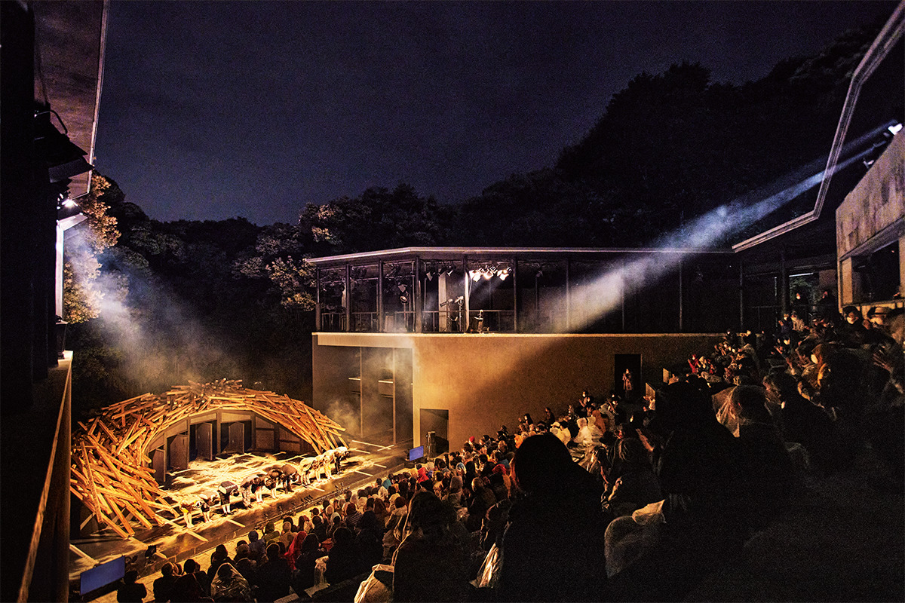
Сидзуоку знают по Фудзи, чаю и морепродуктам, но в театральном мире она известна и другим. Здесь работает SPAC, первая в Японии государственная труппа со своими театрами, а спектакли идут даже в лесу на склоне холма.
Труппа
Город, где театр стал общим делом
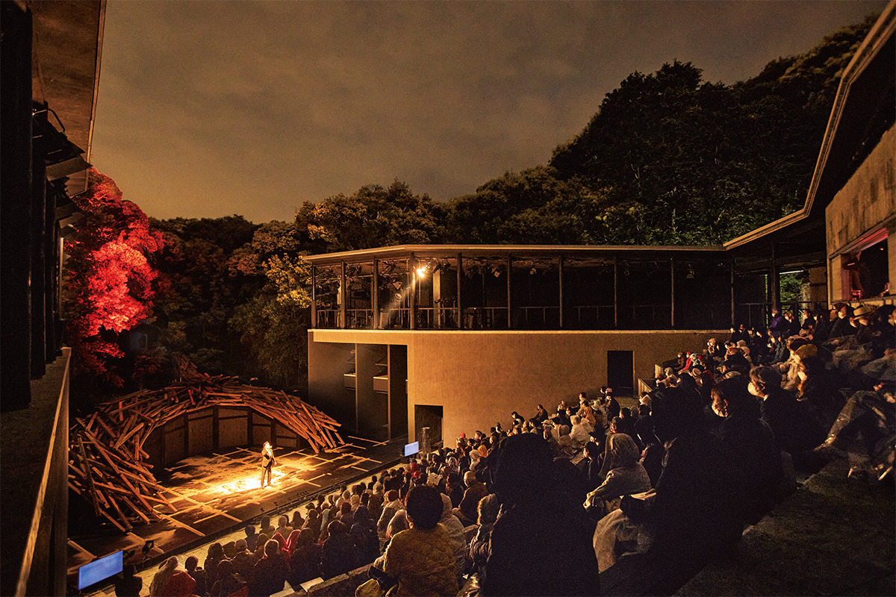
Префектура Сидзуока лежит в самом центре Хонсю, и до неё одинаково удобно добираться из Токио и из Осаки. О её достопримечательностях известно многим: Фудзи из списка всемирного наследия, полуостров Идзу со статусом глобального геопарка ЮНЕСКО, озеро Хамана. Местную кухню тоже хвалят: чай, васаби, выращенную в проточной воде и признанную объектом всемирного сельскохозяйственного наследия, крошечные креветки сакура-эби. Но в мире Сидзуоку знают и как одну из столиц театра, и главная причина тому Центр исполнительских искусств префектуры Сидзуока, сокращённо SPAC.
SPAC стал первой в Японии государственной культурной организацией, у которой есть собственные театры и репетиционные залы, а также постоянная труппа актёров и технический персонал. В полную силу он заработал в 1997 году, когда первым художественным руководителем стал режиссёр Тадаси Судзуки, известный далеко за пределами Японии. С тех пор SPAC постоянно выпускает новые постановки, а каждую весну проводит международный театральный фестиваль «Фудзи-но куни⇄Сэкай энгэкисай», то есть «Страна Фудзи⇄мир», куда приглашают заметных режиссёров и труппы из Японии и других стран.
Есть у труппы и дело, возможное только у государственного театра. Каждый год SPAC бесплатно приглашает на спектакли около 15 000 школьников средних и старших классов, а для малышей и пожилых людей устраивает выездные программы.
В SPAC верят, что театр нужен для встреч самых разных людей. Когда человек выходит на большую сцену и выражает себя, он открывается, и его чувства становятся свободнее. С этой мыслью труппа и связывает Сидзуоку с остальным миром.
Разговор
Зачем людям театр
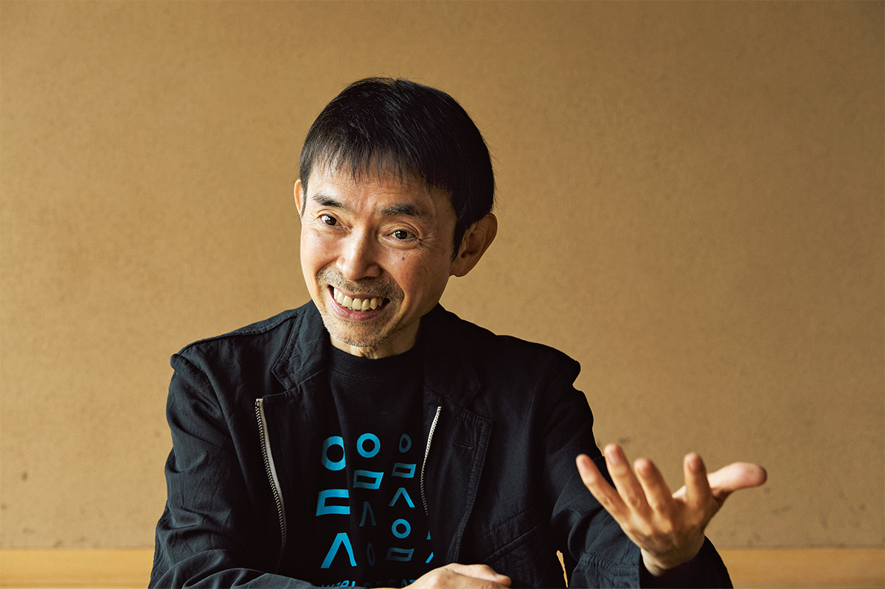
«Некоторые удивляются, что театр может быть профессией. Но если подумать, сценическое искусство существует с древности, в любую эпоху и в любой части света. Может быть, театр просто необходим человеку, чтобы жить»
Сатоси Мияги, художественный руководитель SPAC
Так говорит режиссёр Сатоси Мияги, который к 2022 году руководил SPAC уже 15 лет. Греческие трагедии написаны около 2500 лет назад, в V веке до нашей эры, и их до сих пор ставят. Пожалуй, ни одно искусство не провело рядом с человечеством столько времени, сколько театр.
«Каждый проживает только свою жизнь и не может по-настоящему узнать другого. И всё же в обществе приходится общаться со множеством людей. Мы разговариваем, чтобы понять другого, и тут же лжём, чтобы никто не заглянул нам в душу. Хотим близости и при этом закрываемся и чувствуем себя одинокими. Сцена, на которой „можно сыграть другого“, в такие минуты становилась настоящим местом исцеления»
Сатоси Мияги
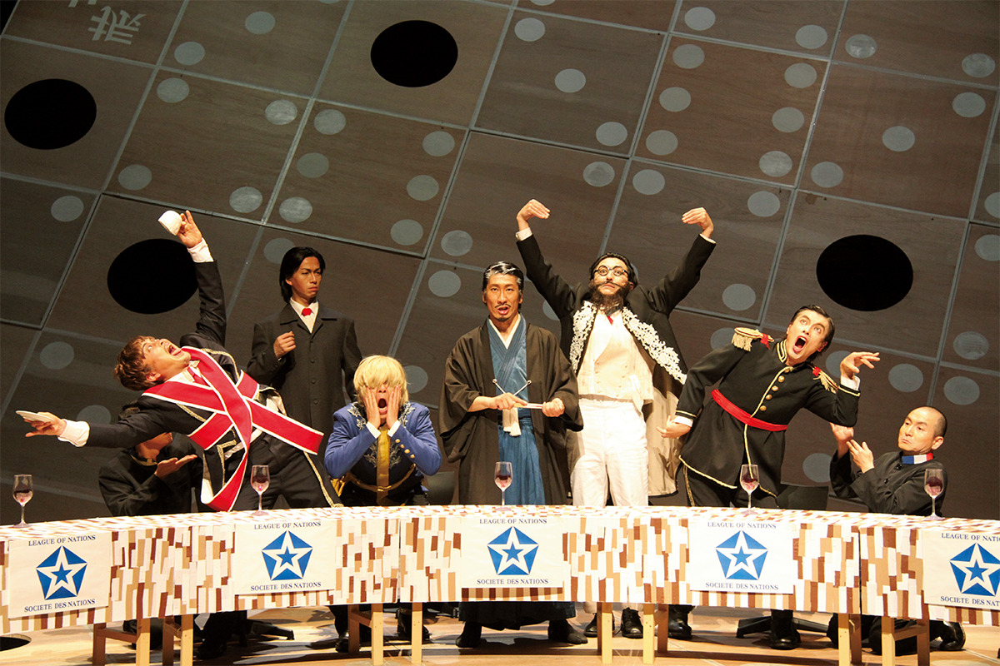
По словам Сатоси Мияги, театр до Нового времени чаще всего строился на общих чувствах: зрители плакали и смеялись в одних и тех же местах. Это был способ с облегчением почувствовать, что все мы одинаковы. В наше время в зал приходят люди с очень разным прошлым, и театр стал показывать разные взгляды и возможности, всё больше будить воображение.
Принято думать, что актёры и другие люди сцены особо одарены. Мияги замечает, что среди них больше тех, кому не хватает связи с другими, кто хочет восполнить в себе что-то недостающее.
«Выходя на сцену, человек делится чувствами с другими и понемногу соединяется с миром. Многих актёров это спасает»
Сатоси Мияги
Спектакль идёт вживую, актёры и зрители смотрят друг на друга, поэтому каждый вечер похож на премьеру. Один и тот же спектакль от раза к разу получается другим, смотря по тому, как отзывается зал.
«Зрители тоже становятся частью спектакля, реакция идёт в обе стороны, в этом и прелесть театра. Если вы устали от людей или носите в себе тревогу, которую трудно выразить словами, приходите в театр. Пока вы смотрите, что-то в душе успокоится, чувства проснутся, и внутри начнёт двигаться ваша собственная чистая энергия»
Сатоси Мияги
Где смотреть
Две площадки SPAC
Обе площадки SPAC находятся в районе Суруга города Сидзуока.
Первая это Парк исполнительских искусств префектуры Сидзуока на северной стороне холма Нихондайра. На 21 гектаре здесь стоят театры необычной формы: театр под открытым небом «Удо» и крытый зал «Даэндо». Есть ещё BOX Theater, где также проходят репетиции, и жилые корпуса для артистов, которые приезжают сюда из Японии и других стран репетировать и выступать. Кроме спектаклей и репетиций в парке регулярно устраивают экскурсии за кулисы для всех желающих, прогулки по окрестному лесу и полям и сбор чая на собственной плантации. Так SPAC поддерживает связь с жителями округи.
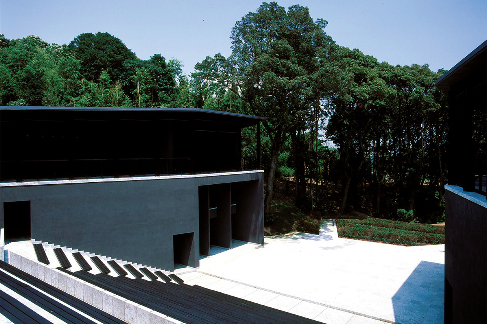
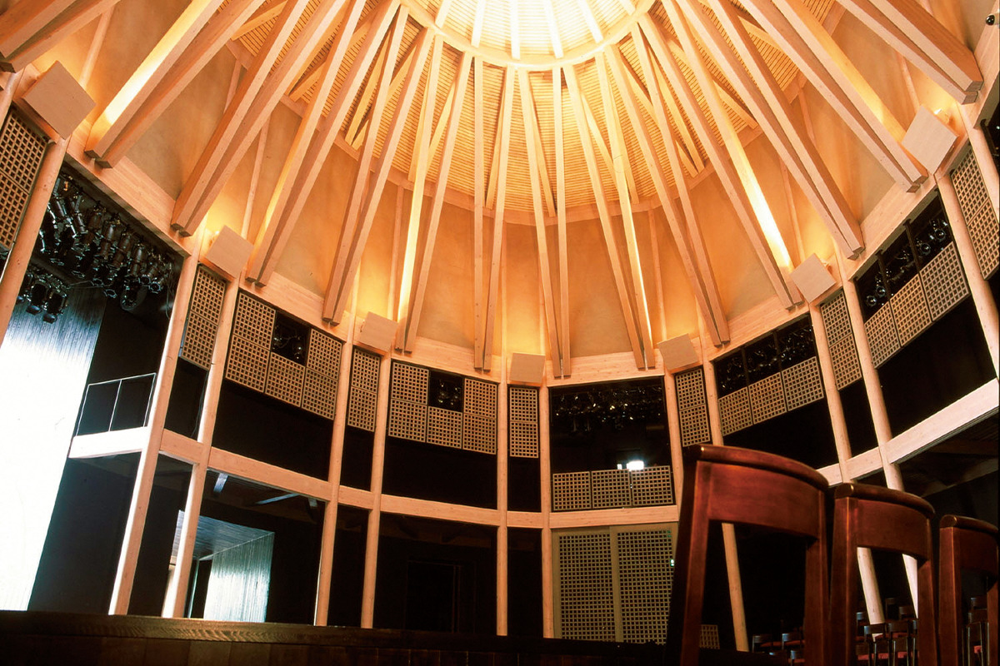
Вторая площадка находится в конгресс-центре GRANSHIP. В нём несколько залов, но Театр искусств Сидзуоки построен специально для спектаклей SPAC. Чтобы постановки труппы смотрелись выразительнее, здесь отказались от портальной арки, которая обрамляет сцену, как картину. Сцена получилась широкой и открытой, а зал подковой охватывает её, так что актёры и зрители оказываются в одном пространстве.
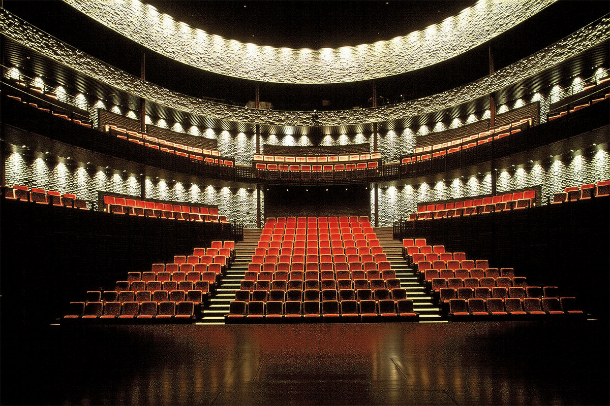
В сезоне 2022–2023 годов в Театре искусств Сидзуоки шёл «Пер Гюнт» Генрика Ибсена в постановке Сатоси Мияги и три новые постановки: «Скупой» Мольера, «Ричард II» Шекспира и «Кукольный дом» Ибсена, который тоже поставил Мияги.
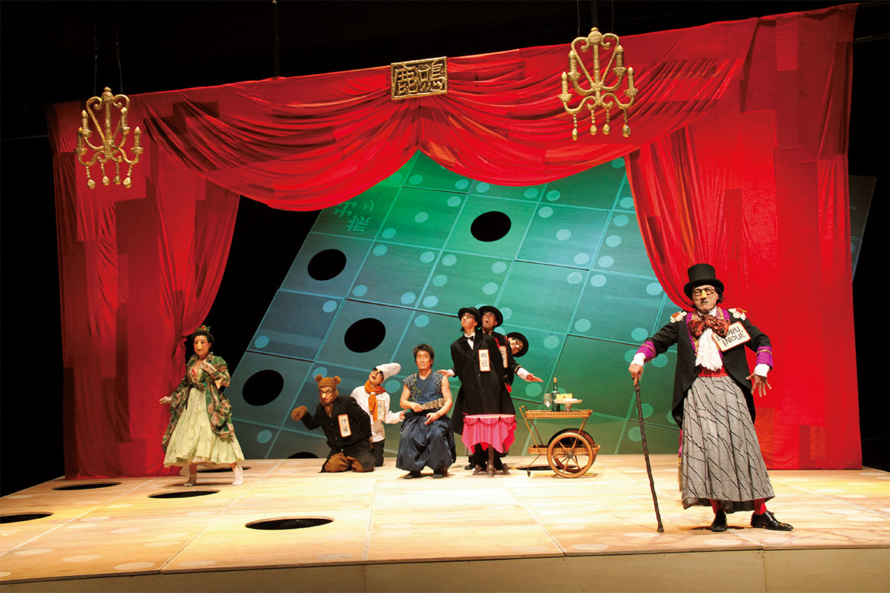
Театр искусств Сидзуоки (GRANSHIP)
- Адрес
- префектура Сидзуока, Сидзуока, район Суруга, Хигаси-Сидзуока, 2-3-1
- Телефон
- +81 54-202-3399 (билетная касса SPAC, 10:00–18:00)
- Как добраться
- у станции JR Хигаси-Сидзуока
- Сайт
- spac.or.jp
Парк исполнительских искусств префектуры Сидзуока
- Адрес
- префектура Сидзуока, Сидзуока, район Суруга, Хирасава, 100-1
- Телефон
- +81 54-202-3399 (билетная касса SPAC, 10:00–18:00)
- Как добраться
- на северной стороне холма Нихондайра
- Сайт
- spac.or.jp
Еда и театр
Сцена, чай и соба
В префектуре Сидзуока развивают гастрономический туризм: вместе с местными фермерами, поварами и труппой SPAC придумывают новые форматы для гостей.
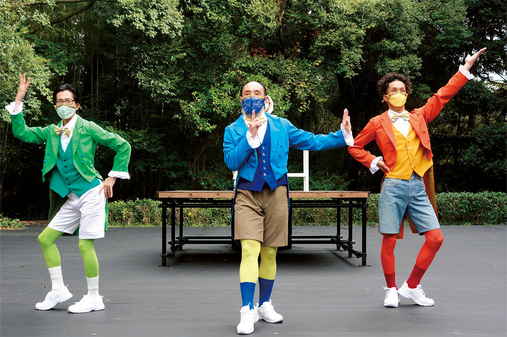
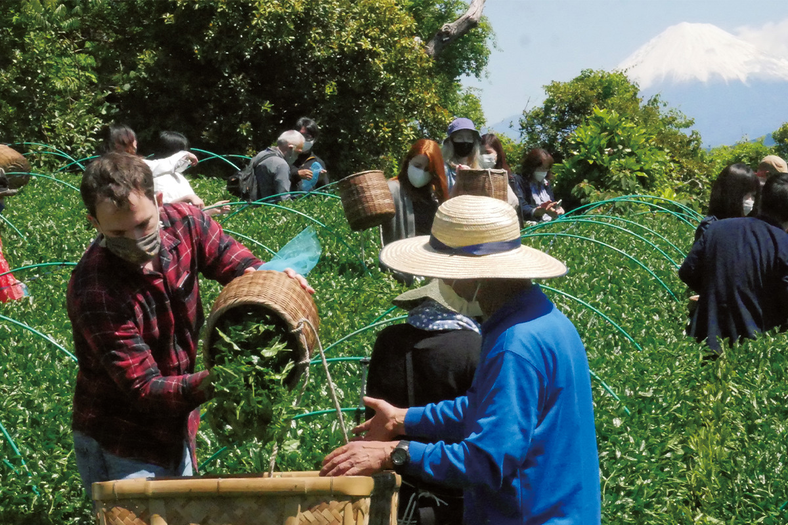
Сидзуока славится чаем, поэтому неудивительно, что на огромной территории парка нашлось место для чайных кустов. Сбор листа приурочен к весеннему фестивалю.
Местные повара тоже участвуют в гастрономических событиях в парке. Хозяин ресторана «Тагата» вымешивал тесто для собы прямо перед зрителями, и его точные движения смотрелись как настоящий номер. В самом ресторане подают собу и тэмпуру из тщательно отобранных продуктов, а к ним большой выбор сакэ.
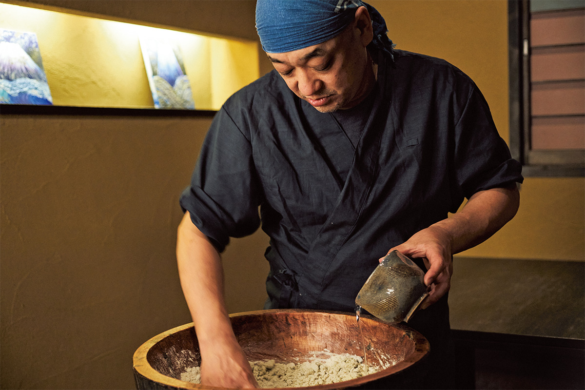
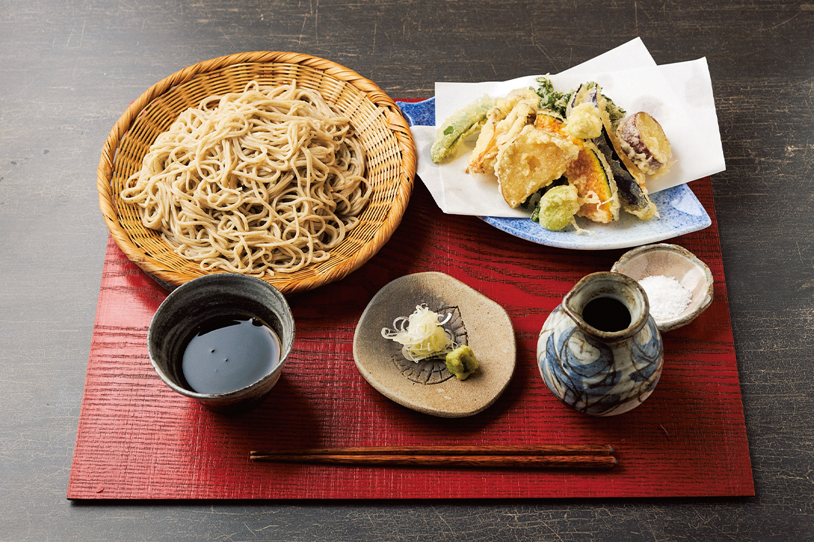
«Тагата»
- Адрес
- префектура Сидзуока, Сидзуока, район Аой, Токива-тё, 2-6-7
- Телефон
- +81 54-250-8555
- Часы работы
- обед 11:30–14:00 (последний заказ 13:30), ужин 17:30–22:00 (последний заказ 21:30)
- Выходные
- понедельник, ужин в воскресенье
- Сайт
- nbgh600.gorp.jp
Фото: Кэндзи Окадзаки, Эйдзи Накао.